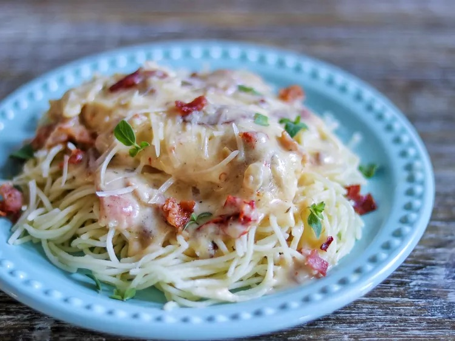

Marry Me Chicken

Finished product of our wonderful cooking session
Marry me chicken is sautéed chicken in a creamy sun-dried tomato sauce.
You can serve it with pasta as suggested or on its own. They say the way
to someone's
heart is through their stomach, and this is worthy of a marriage proposal!
Ingredients
- 1 1/2 pounds skinless, boneless chicken breast halves
- 2 tablespoons butter
- 3 cloves garlic, minced
- 1/4 teaspoon ground thyme
- 1/2 teaspoon dried oregano
- 1/2 cup chicken broth, divided
- 1/2 pound bacon
- 1 (16 ounce) package angel hair pasta
- 1 tablespoon all-purpose flour
- 1/2 cup freshly shaved Parmesan cheese
- 1/4 cup whipping cream
- 1 pinch red pepper flakes
- salt to taste
Directions
Step 1
Gather ingredients. Preheat the oven to 350 degrees F (175 degrees
Celsius)
Zurück zur Übersicht